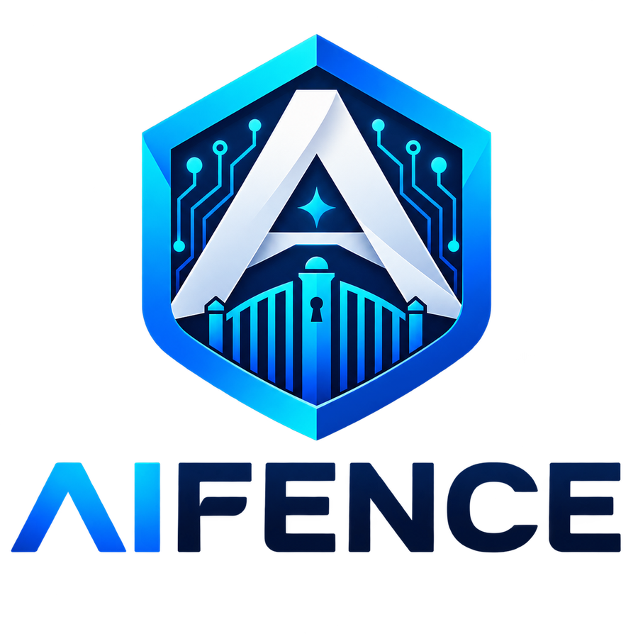

AI agent control plane
Put one governed fence around every AI action.
AIFENCE quality-gates outputs, enforces policy and capabilities, and transports vetted semantic state through one identity model, one audit chain, and one telemetry pipeline.

The fence flow
Three decisions. One receipt.
Every request moves through the same governed pipeline. Any tier can stop it before the next stage runs.
01
Quality
Is the artifact fit to ship?
02
Guard
Is the action permitted?
03
Bus
How does state reach its receiver?
Built for real controls
Governance that survives production.
Fail closed
Unavailable guardrails never become an open door.
Read moreOne identity
Quality, guard, flow, and console share the same identity model.
Read moreAuditable outcomes
Receipts record what passed, what stopped, and what was delivered.
Read moreDurable handoff
Transport only receives vetted payloads and produces claimable messages.
Read moreQuick start
Run the fence locally.
Install the development package, start the composed API, then send a request through the end-to-end fence.
Full installation guidepython -m venv .venv
. .venv/bin/activate
pip install -e ".[dev]"
aifence-api
curl http://127.0.0.1:8080/health/ready